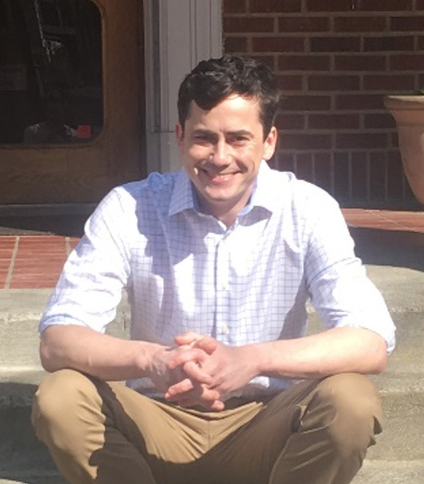
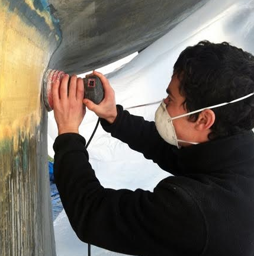

A / No photo
Typography and work lead.
SOFTWARE DEVELOPER
Parker
Harris.
3.5 years at AWS.
Building independently since 2023.
I build web applications and tools. Now looking for my next software development role.
The most direct introduction. Personal details and photos live in the bio.
B / Small portrait
A face, without making it the centerpiece.
SOFTWARE DEVELOPER
Parker
Harris.
3.5 years at AWS.
Building independently since 2023.
I build web applications and tools. Now looking for my next software development role.

Uses your existing outdoor portrait as an informal placeholder. A recent candid portrait could take its place.
C / In context
Something you actually do.
SOFTWARE DEVELOPER
Parker
Harris.
3.5 years at AWS.
Building independently since 2023.
I build web applications and tools. Now looking for my next software development role.

Uses your existing boatbuilding photo. A photo of you testing RACEMATE at a race could connect this approach directly to your software work.